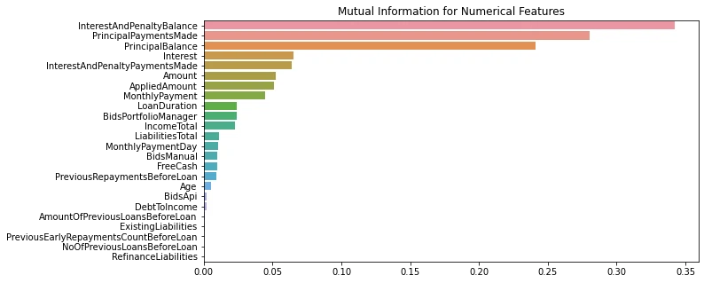

The main purposes of this analysis are to summarize the characteristics of variables that can affect the loan status and to get some ideas about the relationships among variables.
Peer-to-peer (P2P) lending is a form of online micro-financing that has been growing as an alternative to traditional credit financing. P2P lending allows individuals to lend or borrow directly from each other without financial intermediaries, through an internet based platform
The Dataset is from Bondora, a P2P lending platform in Europe. The retrieved data is a pool of both defaulted and non-defaulted loans from the time period between 1st March 2009 and 27th January 2020. The data comprises of demographic and financial information of borrowers, and loan transactions. The total is 134, 000 loan application with 112 variables.
| Feature | Description |
|---|---|
| ActiveLateCategory | When a loan is in Principal Debt then it will be categorized by Principal Debt days |
| ActiveLateLastPaymentCategory | Shows how many days has passed since last payment and categorised if it is overdue |
| ActiveScheduleFirstPaymentReached | Whether the first payment date has been reached according to the active schedule |
| Age | The age of the borrower when signing the loan application |
| Amount | Amount the borrower received on the Primary Market. This is the principal balance of your purchase from Secondary Market |
| AmountOfPreviousLoansBeforeLoan | Value of previous loans |
| AppliedAmount | The amount borrower applied for originally |
| AuctionBidNumber | Unique bid number which is accompanied by Auction number |
| AuctionId | A unique number given to all auctions |
| AuctionName | Name of the Auction, in newer loans it is defined by the purpose of the loan |
| AuctionNumber | Unique auction number which is accompanied by Bid number |
| BidPrincipal | On Primary Market BidPrincipal is the amount you made your bid on. On Secondary Market BidPrincipal is the purchase price |
| BidsApi | The amount of investment offers made via Api |
| BidsManual | The amount of investment offers made manually |
| BidsPortfolioManager | The amount of investment offers made by Portfolio Managers |
| BoughtFromResale_Date | The time when the investment was purchased from the Secondary Market |
| City | City of the borrower |
| ContractEndDate | The date when the loan contract ended |
| Country | Residency of the borrower |
| County | County of the borrower |
| CreditScoreEeMini | 1000 No previous payments problems 900 Payments problems finished 24-36 months ago 800 Payments problems finished 12-24 months ago 700 Payments problems finished 6-12 months ago 600 Payment problems finished < 6 months ago 500 Active payment problems |
| CreditScoreEsEquifaxRisk | Generic score for the loan applicants that do not have active past due operations in ASNEF; a measure of the probability of default one year ahead; the score is given on a 6-grade scale: AAA (“Very low”), AA (“Low”), A (“Average”), B (“Average High”), C (“High”), D (“Very High”). |
| CreditScoreEsMicroL | A score that is specifically designed for risk classifying subprime borrowers (defined by Equifax as borrowers that do not have access to bank loans); a measure of the probability of default one month ahead; the score is given on a 10-grade scale, from the best score to the worst: M1, M2, M3, M4, M5, M6, M7, M8, M9, M10. |
| CreditScoreFiAsiakasTietoRiskGrade | Credit Scoring model for Finnish Asiakastieto RL1 Very low risk 01-20 RL2 Low risk 21-40 RL3 Average risk 41-60 RL4 Big risk 61-80 RL5 Huge risk 81-100 |
| CurrentDebtDaysPrimary | How long the loan has been in Principal Debt |
| CurrentDebtDaysSecondary | How long the loan has been in Interest Debt |
| DateOfBirth | The date of the borrower's birth |
| DebtOccuredOn | The date when Principal Debt occurred |
| DebtOccuredOnForSecondary | The date when Interest Debt occurred |
| DebtToIncome | Ratio of borrower's monthly gross income that goes toward paying loans |
| DefaultDate | The date when loan went into defaulted state and collection process was started |
| DesiredDiscountRate | Investment being sold at a discount or premium |
| EAD1 | Exposure at default, outstanding principal at default |
| EAD2 | Exposure at default, loan amount less all payments prior to default |
| Education | 1 Primary education 2 Basic education 3 Vocational education 4 Secondary education 5 Higher education |
| EL_V0 | Expected loss calculated by the specified version of Rating model |
| EL_V1 | Expected loss calculated by the specified version of Rating model |
| EL_V2 | Expected loss calculated by the specified version of Rating model |
| EmploymentDurationCurrentEmployer | Employment time with the current employer |
| EmploymentPosition | Employment position with the current employer |
| EmploymentStatus | 1 Unemployed 2 Partially employed 3 Fully employed 4 Self-employed 5 Entrepreneur 6 Retiree |
| ExistingLiabilities | Borrower's number of existing liabilities |
| ExpectedLoss | Expected Loss calculated by the current Rating model |
| ExpectedReturn | Expected Return calculated by the current Rating model |
| FirstPaymentDate | First payment date according to initial loan schedule |
| FreeCash | Discretionary income after monthly liabilities |
| Gender | 0 Male 1 Woman 2 Undefined |
| GracePeriodEnd | Date of the end of Grace period |
| GracePeriodStart | Date of the beginning of Grace period |
| HomeOwnershipType | 0 Homeless 1 Owner 2 Living with parents 3 Tenant, pre-furnished property 4 Tenant, unfurnished property 5 Council house 6 Joint tenant 7 Joint ownership 8 Mortgage 9 Owner with encumbrance 10 Other |
| IncomeFromChildSupport | Borrower's income from alimony payments |
| IncomeFromFamilyAllowance | Borrower's income from child support |
| IncomeFromLeavePay | Borrower's income from paternity leave |
| IncomeFromPension | Borrower's income from pension |
| IncomeFromPrincipalEmployer | Borrower's income from its employer |
| IncomeFromSocialWelfare | Borrower's income from social support |
| IncomeOther | Borrower's income from other sources |
| IncomeTotal | Borrower's total income |
| Interest | Maximum interest rate accepted in the loan application |
| InterestAndPenaltyBalance | Unpaid interest and penalties |
| InterestAndPenaltyDebtServicingCost | Service cost related to the recovery of the debt based on the interest and penalties of the investment |
| InterestAndPenaltyPaymentsMade | Note owner received loan transfers earned interest, penalties total amount |
| InterestAndPenaltyWriteOffs | Interest that was written off on the investment |
| InterestLateAmount | Interest debt amount |
| InterestRecovery | Interest recovered due to collection process from in debt loans |
| LanguageCode | 1 Estonian 2 English 3 Russian 4 Finnish 5 German 6 Spanish 9 Slovakian |
| LastPaymentOn | The date of the current last payment received from the borrower |
| LiabilitiesTotal | Total monthly liabilities |
| ListedOnUTC | Date when the loan application appeared on Primary Market |
| LoanDate | Date when the loan was issued |
| LoanDuration | Current loan duration in months |
| LoanId | A unique ID given to all loan applications |
| LoanNumber | A unique number given to all loan applications |
| LoanStatusActiveFrom | How long the current status has been active |
| LossGivenDefault | Gives the percentage of outstanding exposure at the time of default that an investor is likely to lose if a loan actually defaults. This means the proportion of funds lost for the investor after all expected recovery and accounting for the time value of the money recovered. In general, LGD parameter is intended to be estimated based on the historical recoveries. However, in new markets where limited experience does not allow us more precise loss given default estimates, a LGD of 90% is assumed. |
| MaritalStatus | 1 Married 2 Cohabitant 3 Single 4 Divorced 5 Widow |
| MaturityDate_Last | Loan maturity date according to the current payment schedule |
| MaturityDate_Original | Loan maturity date according to the original loan schedule |
| ModelVersion | The version of the Rating model used for issuing the Bondora Rating |
| MonthlyPayment | Estimated amount the borrower has to pay every month |
| MonthlyPaymentDay | The day of the month the loan payments are scheduled for The actual date is adjusted for weekends and bank holidays (e.g. if 10th is Sunday then the payment will be made on the 11th in that month) |
| NewCreditCustomer | Did the customer have prior credit history in Bondora 0 Customer had at least 3 months of credit history in Bondora 1 No prior credit history in Bondora |
| NextPaymentDate | According to schedule the next date for borrower to make their payment |
| NextPaymentNr | According to schedule the number of the next payment |
| NextPaymentSum | According to schedule the amount of the next payment |
| NoOfPreviousLoansBeforeLoan | Number of previous loans |
| note_id | A unique ID given to the investments |
| NoteLoanLateChargesPaid | The amount of late charges the note has received |
| NoteLoanTransfersInterestAmount | The amount of interest the note has received |
| NoteLoanTransfersMainAmount | The amount of principal the note has received |
| NrOfDependants | Number of children or other dependants |
| NrOfScheduledPayments | According to schedule the count of scheduled payments |
| OccupationArea | 1 Other 2 Mining 3 Processing 4 Energy 5 Utilities 6 Construction 7 Retail and wholesale 8 Transport and warehousing 9 Hospitality and catering 10 Info and telecom 11 Finance and insurance 12 Real-estate 13 Research 14 Administrative 15 Civil service & military 16 Education 17 Healthcare and social help 18 Art and entertainment 19 Agriculture, forestry and fishing |
| OnSaleSince | Time when the investment was added to Secondary Market |
| PenaltyLateAmount | Late charges debt amount |
| PlannedInterestPostDefault | The amount of interest that was planned to be received after the default occurred |
| PlannedInterestTillDate | According to active schedule the amount of interest the investment should have received |
| PlannedPrincipalPostDefault | The amount of principal that was planned to be received after the default occurred |
| PlannedPrincipalTillDate | According to active schedule the amount of principal the investment should have received |
| PreviousEarlyRepaymentsBeforeLoan | How much was the early repayment amount before the loan |
| PreviousEarlyRepaymentsCountBeforeLoan | How many times the borrower had repaid early |
| PreviousRepaymentsBeforeLoan | How much the borrower had repaid before the loan |
| PrincipalBalance | Principal that still needs to be paid by the borrower |
| PrincipalDebtServicingCost | Service cost related to the recovery of the debt based on the principal of the investment |
| PrincipalLateAmount | Principal debt amount |
| PrincipalOverdueBySchedule | According to the current schedule, principal that is overdue |
| PrincipalPaymentsMade | Note owner received loan transfers principal amount |
| PrincipalRecovery | Principal recovered due to collection process from in debt loans |
| PrincipalWriteOffs | Principal that was written off on the investment |
| ProbabilityOfDefault | Probability of Default, refers to a loan’s probability of default within one year horizon. |
| PurchasePrice | Investment amount or secondary market purchase price |
| Rating | Bondora Rating issued by the Rating model |
| Rating_V0 | Bondora Rating issued by version 0 of the Rating model |
| Rating_V1 | Bondora Rating issued by version 1 of the Rating model |
| Rating_V2 | Bondora Rating issued by version 2 of the Rating model |
| RecoveryStage | Current stage according to the recovery model 1 Collection 2 Recovery 3 Write Off |
| RefinanceLiabilities | The total amount of liabilities after refinancing |
| ReScheduledOn | The date when the a new schedule was assigned to the borrower |
| Restructured | The original maturity date of the loan has been increased by more than 60 days |
| SoldInResale_Date | The date when the investment was sold on Secondary market |
| SoldInResale_Price | The price of the investment that was sold on Secondary market |
| SoldInResale_Principal | The principal remaining of the investment that was sold on Secondary market |
| StageActiveSince | How long the current recovery stage has been active |
| Status | The current status of the loan application |
| UseOfLoan | 0 Loan consolidation 1 Real estate 2 Home improvement 3 Business 4 Education 5 Travel 6 Vehicle 7 Other 8 Health 101 Working capital financing 102 Purchase of machinery equipment 103 Renovation of real estate 104 Accounts receivable financing 105 Acquisition of means of transport 106 Construction finance 107 Acquisition of stocks 108 Acquisition of real estate 109 Guaranteeing obligation 110 Other business All codes in format 1XX are for business loans that are not supported since October 2012 |
| UserName | The user name generated by the system for the borrower |
| VerificationType | Method used for loan application data verification 0 Not set 1 Income unverified 2 Income unverified, cross-referenced by phone 3 Income verified 4 Income and expenses verified |
| WorkExperience | Borrower's overall work experience in years |
| WorseLateCategory | Displays the last longest period of days when the loan was in Principal Debt |
| XIRR | XIRR (extended internal rate of return) is a methodology to calculate the net return using the loan issued date and amount, loan repayment dates and amounts and the principal balance according to the original repayment date. All overdue principal payments are written off immediately. No provisions for future losses are made & only received (not accrued or scheduled) interest payments are taken into account. |
The data is pre-processed by removing the variables that are not relevant to the analysis, and by dealing with missing values. for the missing values, the variables with more than 40% missing values are removed, and the rest are imputed by the mean or mode value of the variable.
Then for categorical variables, we removed the irrelevant values that could happen during the data collection process, and then try to prepare the data to be used in the analysis with higher integrity and correctness.
In addition, the Default Status variable was defined in this process where we created a column for the default status of each loan application. The default status is defined as 1 if the loan is defaulted, and 0 if the loan is not defaulted.
The shape of the dataset after pre-processing is (77394, 42) including the target variable which is Default Status.
The EDA is done to understand the data and to get some ideas about the relationships among variables. The EDA is done by using the univariate and bivariate analysis. The univariate analysis is done by using the descriptive statistics and the visualization. The bivariate analysis is done by using the visualization.
We found many correlation between the variables and tried to identify and visualize the relationships among variables. The relationships are visualized by using the scatter plot, box plot, and bar plot.
All the insights and findings from the EDA can be found in the file the EDA NoteBook.
These are some of the insights and findings from the EDA:
The feature engineering and selection is done to prepare the data for the machine learning model. The feature engineering is done by removing the outliers in the dataset and by applying the method of Mutual Information to select the most relevant features. Then according to the results of EDA we tested some new variables that could be useful for the analysis. and finally we applied the method of Principal Component Analysis (PCA) to reduce the dimensionality of the data.
The feature engineering and selection is done by using the following methods:
For Category Variables:
For Numeric Variables: 
The first target variable is the Default Status, which is a binary variable. The classification model is used to predict the Default Status of the loan application. The classification model is done by using the Logistic Regression, Decision Tree, Random Forest, and Gradient Boosting Classifier. All models were evaluated by using the accuracy, precision, recall, F1 score and confusion matrix. Then we selected the best model with the highest accuracy and applied the model to the test data.
The selected model was: Logistic Regression with the accuracy of 88.57 %
As part of the credit risk analysis, predicting the default state of the loan is just one part of the analysis. There are other factors that the credit risk depends on. In our analysis, we created the target variables that has an impact on the credit score. These Targets are:
Then we create a model to predict these targets using Regression Model. The regression model is done by using the Linear Regression, Ridge Regression, Random Forest Regressor, and Gradient Boosting Regressor. All models were evaluated by using the R2 score, Mean Absolute Error (MAE), Mean Squared Error (MSE), and Root Mean Squared Error (RMSE). Then we selected the best model with the highest R2 score and applied the model to the test data.
The selected model was: Ridge Regression with the R2 score of 89.07 %
The pipeline is done by using the Pipeline from sklearn. The pipeline is done by using the Standard Scaler, PCA, and the selected model. The pipeline is done for both classification and regression model.
The pipeline for the classification model is as follows:
The pipeline for the regression model is as follows:
These pipelines are used to predict the Default Status, EMI, ELA, and PROI. They were deployed in the web application using the Flask framework with pickle to save the model.
The deployment is done by using the Flask framework. The web application is deployed in the Heroku platform. The web application is done by using the HTML, CSS, and JavaScript. The web application is done by using the Bootstrap framework. The web application is done by using the Flask framework with pickle to save the model.
There are two pages in the web application:
Here is the link to the web application: Deployment Link/
Here is a screenshot of the web application:

The final result is a web application that predicts the parameters required to calculate the credit score of a given loan application and investors can use this web application to predict the credit score of a loan application before investing in it, this will help investors to make a better decision and to reduce the risk of investing in a loan application that will be defaulted.
This project was done as a part of Data Analytics and Machine Learning Internship at Technocolabs.
This project is done by: